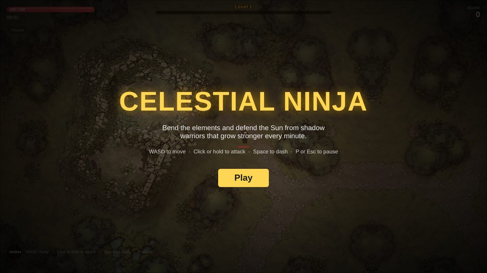
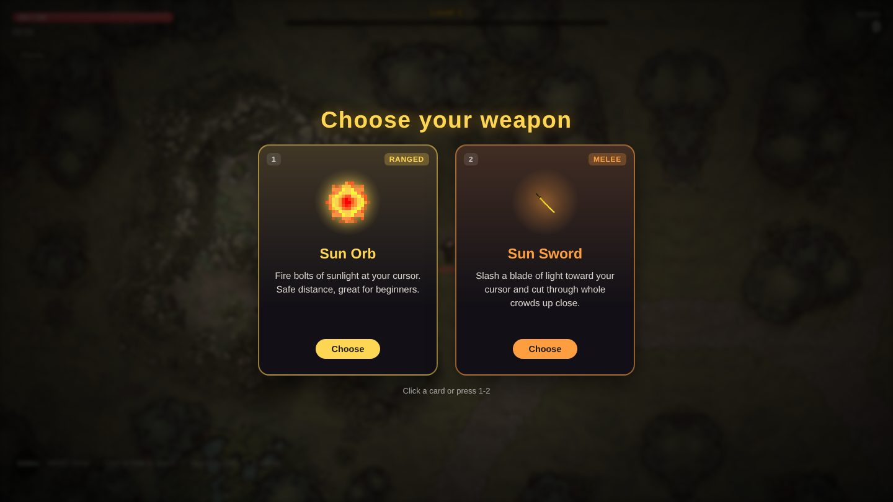
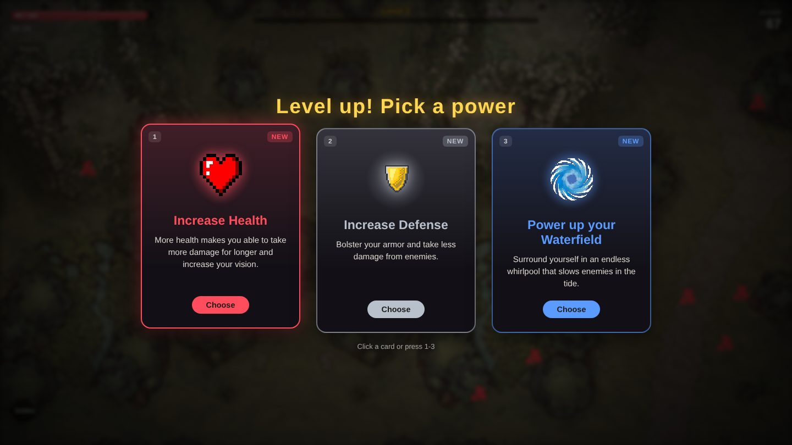

Getting started
I'd never used p5play, so I started with its examples to plan the code structure.
Enemy health and speed scale exponentially while the player scales linearly, so the game gets harder the longer you last.

Enemies first snapped to the player way too fast because I was using a force that kept increasing. Switching to a constant velocity fixed it.
Power-ups and graphics
The spinning stones were the hardest power-up because they needed unit circle math. The bouncing airball was next, since its direction had to flip at the window edges. Every few levels the game pauses and gives you three random upgrade cards to pick from.

My own drawings looked rough, so I switched to compressed pixel art. That took a while for animated sprites like the ninja and the rotating water.
Planning round two
For the second phase, I planned new features on paper: a sword, pause and play-again buttons, new enemy types, a boss, and a Firebase leaderboard. Firebase was the part I was most worried about.


New features
The sword was the hardest part of the whole project. p5play didn't handle mouse aiming well on a moving canvas, and my first attempt didn't work at all. I ended up attaching a sword sprite to the player and making four rotated animations to match the hitbox.
New enemies. Red enemies are fast and rush you. Purple enemies shoot shadow orbs at you. The boss shows up every five minutes and charges at you in bursts. Getting its timing right took a lot of tuning.
Balancing. I toned down some skills, changed how defense works, and added darkness that closes in over time so enemies are harder to see. I aimed for runs under about 10 minutes.


Live leaderboard. With help from a classmate, I built a Firebase backend for high scores. I added a real-time listener so the top 5 update live, right on the game canvas.
Working with the library's creator
The game was lagging, so I reached out to Quinton, the creator of p5play. He changed how the library checks collisions, which cut resource use.

Friends playtested it and asked to hold the mouse instead of clicking over and over, so I added that. I also made the game pause automatically when you switch tabs.
What I learned
A week and a half, a new library, and 800+ lines of code. I finished on time, but working out of order cost me time. Next time I'd plan stricter.
If I kept going, I'd add loot that carries between runs, a menu, multiplayer, and a magnet power-up.
Coming back to it in 2026
Three years later the game had stopped loading. The libraries it pulled from the web had changed underneath it. I pinned them into the repo, then used the chance to fix what bugged me as a player and finish the list above.


- A sword that hits where you aim. The old one stretched to the cursor and pushed enemies around. Now it's a fixed blade that sweeps toward the cursor and hits whatever it covers.
- Enemies you can actually see. Each shadow gets a colored outline that shows its type, on a toned-down forest map that replaced the old concrete tiles.
- More going on. Brutes, splitters, bombers with a warning circle, rare elites, and random events like a surrounding ring or a rush from one side.
- Pacing that holds attention. The enemy count climbs steadily and moves in 60 second waves, so there's always a breather or a rush coming.
- New moves and powers. A dash with a brief dodge window, a kill streak multiplier, homing fireballs, and six new upgrades, including the magnet I wanted in 2023.
- A faster start. You pick a weapon right after Play instead of sitting through a 30 second tutorial.

I also fixed a security hole: the leaderboard put player names on the page as raw HTML, so anyone could submit a name that ran code in other players' browsers. Names now show as plain text.